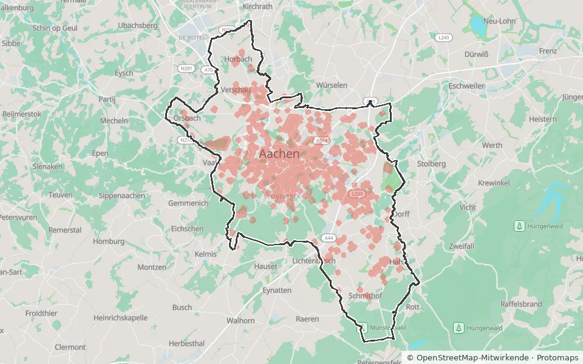
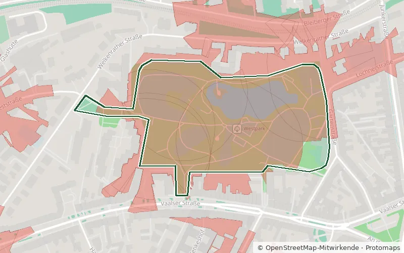
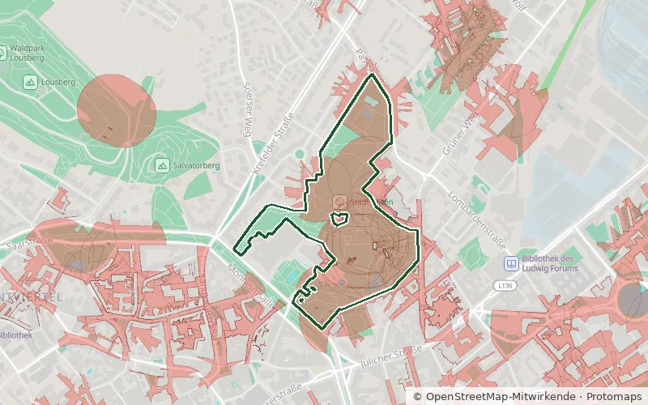
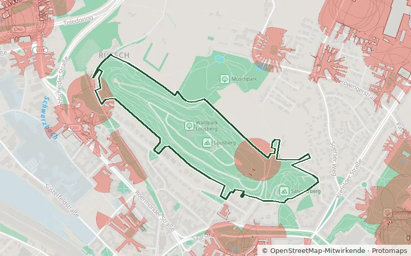
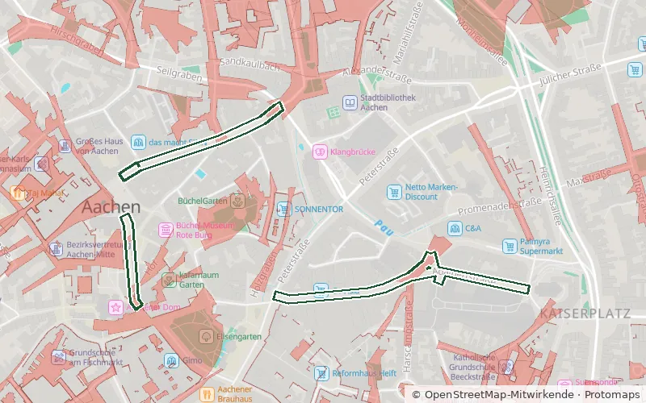
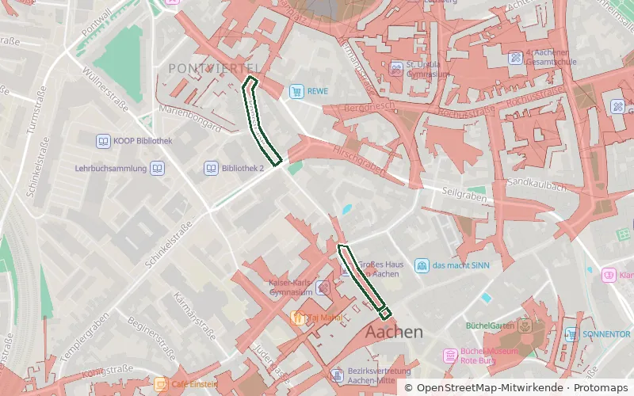
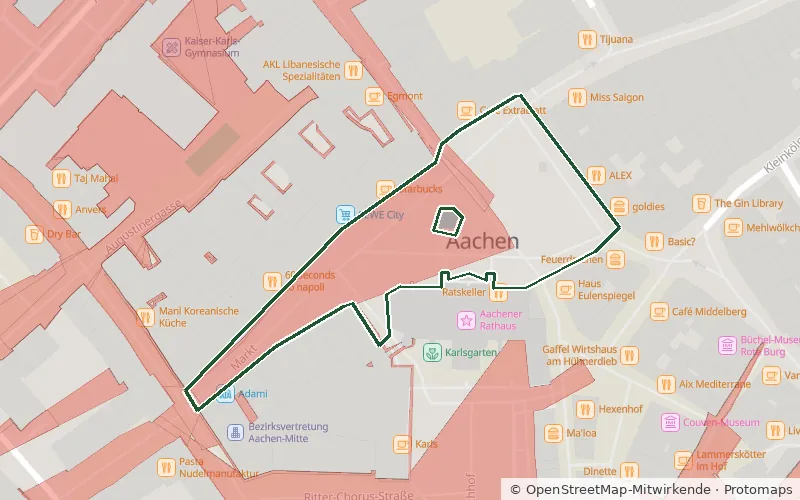

In Aachen ist öffentliches Kiffen auf 21 km² verboten, das sind 13,1 % der Stadtfläche von 161 km². Grund sind 1 223 Einrichtungen wie Schulen und Spielplätze: In ihrer Sichtweite, bis 100 Meter vom Eingang und ohne Gebäude dazwischen, verbietet § 5 KCanG den Konsum. Dazu kommen die Fußgängerzonen von 7 bis 20 Uhr und überall die Gegenwart von Minderjährigen.
Knapp ein Viertel der Stadt ist Wald (23 % der Stadtfläche), vor allem im Süden, und davon liegen nur 4,9 % in einer Zone; ohne den Wald gerechnet sind es 15,5 %.

Woher die Zonen kommen
| Einrichtung | Anzahl | Zonenfläche |
|---|---|---|
| Schulen | 81 | 3,8 km² |
| Kitas und Kindergärten | 143 | 3,8 km² |
| Kindertagespflege | 4 | 0,1 km² |
| Spielplätze | 343 | 6,7 km² |
| Kinder- und Jugendeinrichtungen | 37 | 0,8 km² |
| Sportstätten | 615 | 12,9 km² |
Jede Art für sich gezählt, Überlappungen also mehrfach. Anbauvereinigungen nur, soweit in OpenStreetMap eingetragen.
Die meisten Zonen gehen auf die 615 Sportstätten zurück, danach auf die 343 Spielplätze. Auf allen öffentlichen Spiel- und Bolzplätzen verbietet die Spielplatzsatzung der Stadt von 1998 außerdem Alkohol „oder Drogen“; Cannabis nennt sie nicht (Spielplatzsatzung). Das Nichtraucherschutzgesetz des Landes verbietet dort zusätzlich das Rauchen von Tabak, also auch von Joints mit Tabak.
Westpark, Stadtgarten und Lousberg
Im Westpark liegen 94 % der Fläche in einer Zone: Zwei Spielplätze und vier Sportanlagen liegen im Park. Im Stadtgarten sind es 86 %, mit zehn Sportanlagen, zwei Spielplätzen und einer Kita.


Der Lousberg, ein Waldpark auf dem Hügel nördlich der Innenstadt, liegt dagegen nur zu 13 % in einer Zone; im Park liegt ein einziger Spielplatz. Im Kurpark Burtscheid sind es 64 %, im Kennedypark 90 %, im Kaiser-Friedrich-Park 79 %. Der Müschpark liegt fast außerhalb (3 %), der Ferberpark fast ganz in einer Zone (97 %).

Innenstadt
Aachen veröffentlicht die Zugänge zu seinen Fußgängerzonen als offenen Datensatz: 80 beschilderte Zugänge, 60 davon mit dem Schild Fußgängerzone (Stadt Aachen, offene Daten). Fußgängerzone ist danach auch die Pontstraße, in Burtscheid unter anderem der Abteiplatz. Dort gilt von 7 bis 20 Uhr Konsumverbot; blau sind die Fußgängerbereiche aus OpenStreetMap.
Von Adalbertstraße und Großkölnstraße liegen außerdem 16 % in einer Sichtweiten-Zone, von der Pontstraße 50 %, vom Markt 53 % und vom Katschhof 50 %. Der Friedrich-Wilhelm-Platz am Elisenbrunnen liegt fast ganz außerhalb (1 %); tagsüber gilt dort aber das Verbot der Fußgängerzone.



Was sonst noch gilt
In Nordrhein-Westfalen kostet ein Verstoß 50 bis 500 Euro, vor Minderjährigen 300 bis 1.000 Euro (Land NRW). Auf Volksfesten müssen die Veranstalter Verstöße verhindern, notfalls mit einem Verbot (Erlass, Mai 2024). Im Tivoli verbietet die Stadionordnung Konsum, Besitz und Weitergabe von Cannabis (Stadionordnung). Eigene Verbotszonen für Cannabis hat Aachen nicht (Stand 27. November 2026).
Häufige Fragen
Wo darf man in Aachen kiffen?
Nach § 5 KCanG außerhalb der roten Flächen, etwa auf großen Teilen des Lousbergs (13 % in einer Zone) und im Münsterwald (0 %). Tagsüber nicht in den Fußgängerzonen, auch nicht in der Pontstraße, nie in Gegenwart von Minderjährigen. Weiß heißt nicht sicher erlaubt: Hecken, Bäume und fehlende Einrichtungen kennt die Karte nicht.
Wie genau ist das?
Täglich aus OpenStreetMap gerechnet, mit Gebäuden als Sichthindernis; die Zahlen hier sind vom 27. November 2026. Eine Orientierungshilfe, keine Rechtsauskunft (wie gerechnet wird).
Fehlt eine Einrichtung? Korrekturen in OpenStreetMap stehen am Tag darauf auf der Karte; bitte nur eintragen, was es vor Ort gibt.